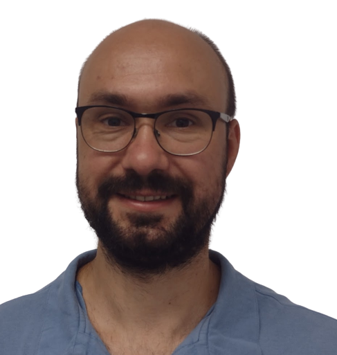

Jmenuji se Vít Hrdlička a fyzioterapii jsem studoval na Fakultě tělesné výchovy a sportu Univerzity Karlovy v Praze. Bakalářské studium jsem dokončil v roce 2011. Poté jsem pracoval pro velmi široké spektrum pacientů. Začal jsem lázeňskou péčí, pokračoval jsem u vrcholových sportovců (hokejisté, atleti, cyklisté, boxeři a další) a vyzkoušel jsem si i praxi na klinice, která se zabývala neplodností. Od roku 2015 pracuji na rehabilitační klinice Rehamed na Vinohradech. Současně s praxí jsem si dokončil magisterská studia na FTVS UK (2017).
V pracovním i studijním životě mám obrovské štěstí. Mohl jsem se osobně učit od osobností české fyzioterapie jako je doc. F.Véle, prof. K. Lewit nebo prof. P. Kolář.
Jsem držitelem Osvědčení k výkonu zdravotnického povolání bez odborného dohledu v oboru fyzioterapeut, MZ ČR, 2013, registrační číslo 024-0152-9207. Jsem držitelem Oprávnění k poskytování zdravotních služeb v Plzeňském kraji.